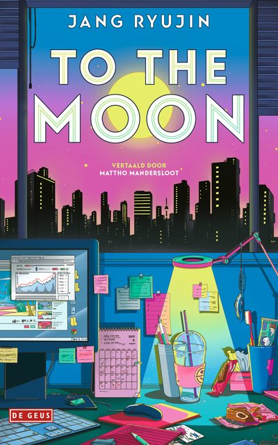
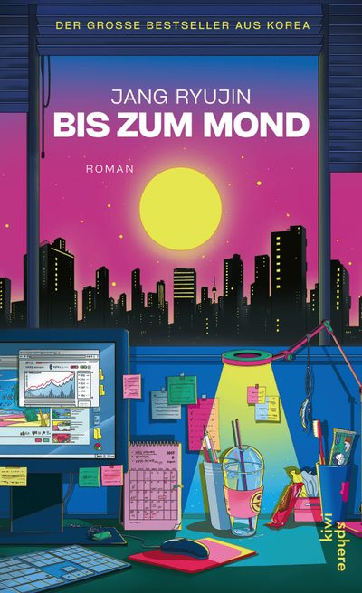
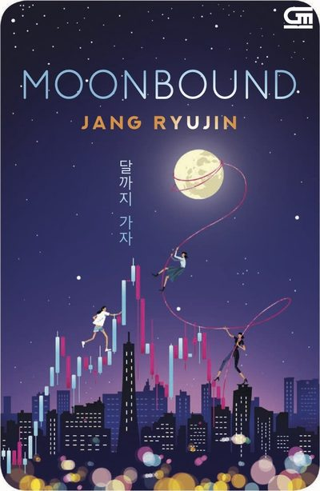
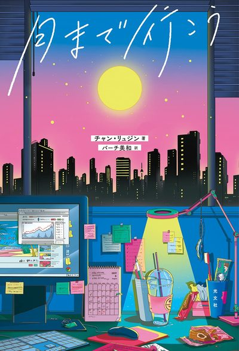
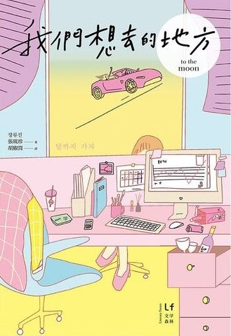
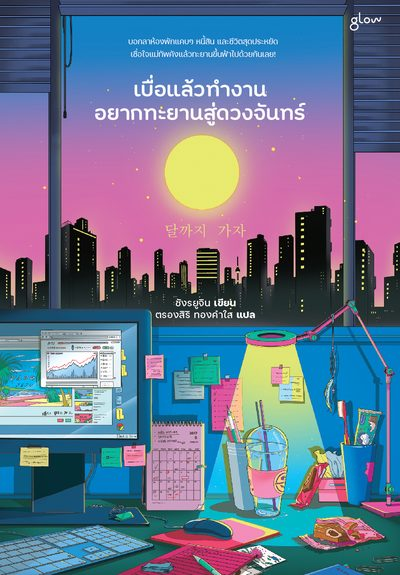

Work
Books
- 2025 The Season We Sparkle 우리가 반짝이는 계절 Memoir
- 2023 A Driving Course 연수 Short stories
- 2021 To the Moon 달까지 가자 Novel
- 2020 Maya in Tokyo 도쿄의 마야 Short story
- 2019 The Pleasures and Sorrows of Work 일의 기쁨과 슬픔 Short stories
Translated Editions
Works published in 17 translated editions across 11 languages.
To the Moon 달까지 가자
- English
- Chinese (Traditional)
- Dutch
- German
- Indonesian
- Japanese
- Russian
- Thai
- Turkish
The Pleasures and Sorrows of Work 일의 기쁨과 슬픔
- Chinese (Simplified)
- Chinese (Traditional)
- Japanese
- Thai
- Turkish
- Vietnamese
- English · Forthcoming
A Driving Course 연수
- Chinese (Traditional)
The Season We Sparkle 우리가 반짝이는 계절
- Chinese (Traditional) · Forthcoming
Laberintos de Neón anthology
- Spanish
All editions with covers17
To the Moon 달까지 가자

Dutch · 2025 To the Moon
German · 2025 Bis zum Mond Russian · 2025 До Луны Turkish · 2025 Ay’a Gidelim
Indonesian · 2023 Moonbound
Japanese · 2023 月まで行こう
Chinese (Traditional) · 2022 我們想去的地方
Thai · 2022 เบื่อแล้วทำงาน อยากทะยานสู่ดวงจันทร์The Pleasures and Sorrows of Work 일의 기쁨과 슬픔
A Driving Course 연수
Laberintos de Neón anthology
Press Coverage
Reviews
“Their wild ride through financial turmoil demonstrates that the hopes, anxieties and issues of millennials are universal.”
Daily Mail
“A zeitgeisty rags-to-riches tale.”
“An off-beat slice-of-life novel.”
“This modern-day fairy tale is centred on a very modern-day premise: the rollercoaster world of cryptocurrency.”
“Equal parts heartfelt and laugh-out-loud comedic.”
“Authors of such novels must have a keen sense of what appeals to readers, as Jang clearly does.”
Interviews
Sugar-dusted Korean bestseller ‘To the Moon’ takes off in English edition
Jang Ryu-jin sprinkles sugar on upbeat office tale in ‘To the Moon’
LTI KoreaVideo
LITMUS: Authors, Interview with Jang Ryujin
Media Adaptations
TV Series
- 2025 To the Moon 달까지 가자 MBC · Original Story
TV Film
- 2020 The Pleasures and Sorrows of Work 일의 기쁨과 슬픔 KBS · Original Story
Radio Series
- 2026 To the Moon 달까지 가자 KBS · Original Story
Theatre
- 2022 The Pleasures and Sorrows of Work 일의 기쁨과 슬픔Revival Seoul Metropolitan Theatre · Original Story
- 2021 The Pleasures and Sorrows of Work 일의 기쁨과 슬픔Premiere Seoul Metropolitan Theatre · Original Story
Awards
- 2020 Shim Hun Literary Award 심훈문학대상 Winner
- 2020 Munhakdongne Young Writers’ Award 젊은작가상 Winner
- 2018 Changbi Prize for New Figures in Literature 창비신인소설상 Winner
- 2020 Booksellers’ Book of the Year 서점인이 뽑은 올해의 책 Winner
- 2020–23 Book of the Year selections, including Kyobo Book Centre, YES24 and Aladin 7 times
International Events
Abroad
- 2025 Università per Stranieri di Siena Siena, Italy
- 2024 Istanbul University Istanbul, Türkiye
- 2023 Korean Cultural Center Osaka Osaka, Japan
- 2023 Taipei International Book Exhibition Taipei, Taiwan
International festivals in Korea5
- 2026 Seoul International Book Fair Seoul
- 2025 Seoul International Book Fair Seoul
- 2024 Asia Literature Festival Gwangju
- 2020 Seoul International Writers’ Festival Seoul
- 2020 Seoul International Book Fair Seoul
Translation workshops6
- 2026 LTI Korea Translation Academy Russian
- 2024 LTI Korea Translation Academy Spanish
- 2024 LTI Korea Translation Academy German
- 2023 Moscow State Linguistic University Russian
- 2021 Dalian University of Foreign Languages Chinese
- 2020 LTI Korea Translation Academy French
Education
Yonsei University — BA
Sociology
Dongguk University — MA coursework completed
Korean Literature, Creative Writing
Contact